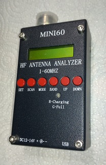

An Android client for the Mini60 and SARK100 bluetooth enabled antenna analyzers
Github home: https://github.com/ishmal/open60
On IRC at: irc.geekshed.net #redditnet
Bob Jamison, KS5D
How to use:
Pairing
Pair your Android with the MINI60. Make sure that something like "MINI60" is listed in the paired Bluetooth device list. If it has another name, you can change the expected name in the configuration. The expected name is case-insensitive, and only needs to start the full name. For example, "mini" will match "MINI", "MINI 60", "MINI60 AT" etc. If the device is an original SARK100, then "sark" will probably work.
Prepare the MINI60 for use
- Connect coaxial cable
- Turn on
- Press 'Set' twice so it shows 'PC Link'
- Press 'Down' until it says 'Waiting Link'
Select a range to scan
Swipe the Open60 app screen left or right to cycle through the preset ranges.
Scan
Double-tap to start scanning. The red dot should turn to green (Connected) and/or blue (Scanning). The cyan cursor will move across the graph, showing scan progress. VSWR will be traced in red, impedance in green. If you do not see the curves, then they are off-scale. When the scan is completed, the dot will be green again. The point of minimum SWR will be indicated.
Configuration
The app comes with default frequency ranges for all of the HF bands and 60 meters. You can modify and rename any or all of them if you want. Your changes will be made persistent when you hit "Save". You can always get the original settings back by pressing the "Restore" button. There will be 50 steps for each range.
Finally
That is all. It is a simple device, and a simple app. Have fun!